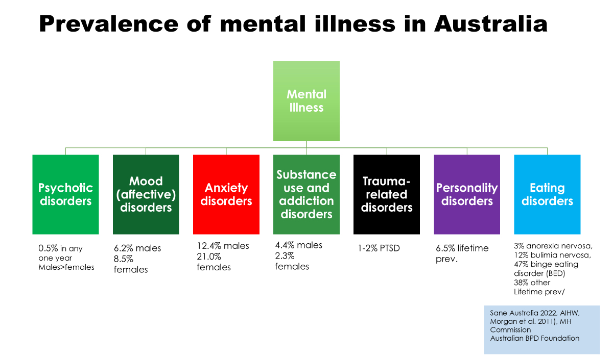
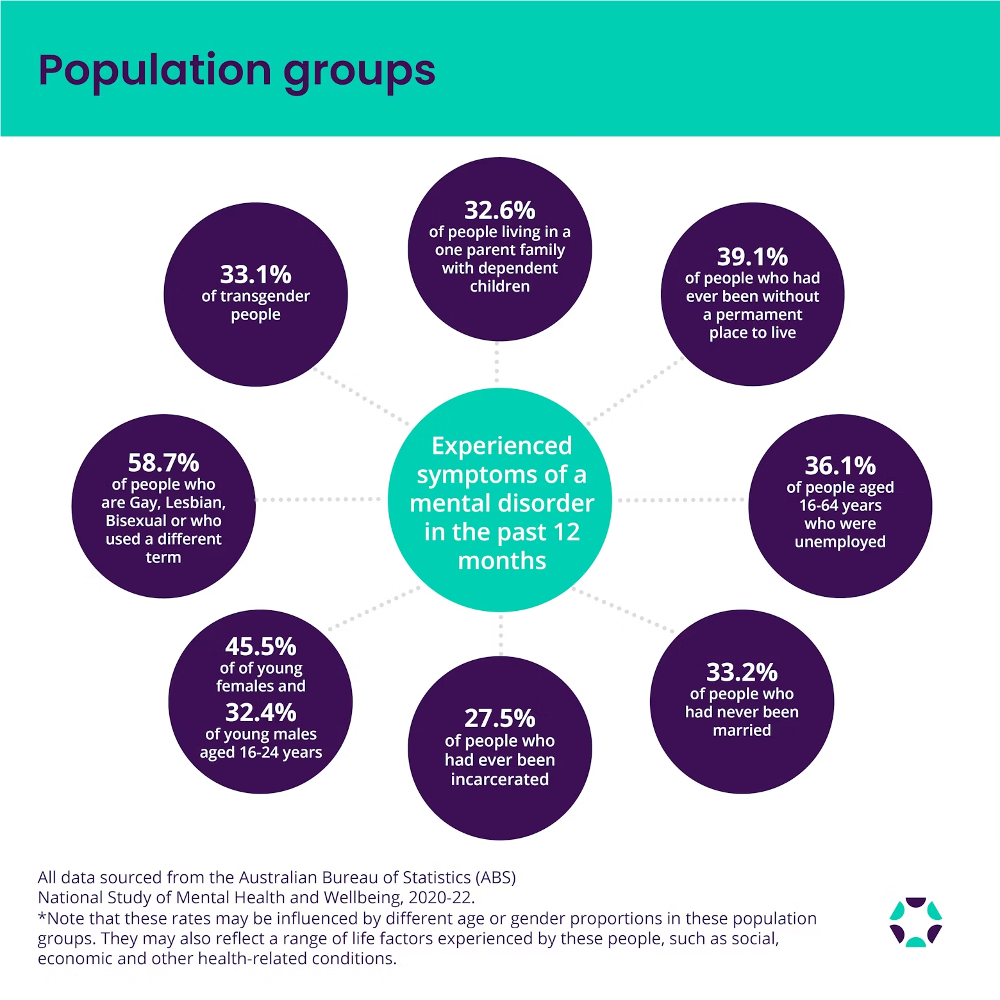

Pre-Lab Activity
Read Chapter 34 of the textbook which relates to the topic of Depression.
Read the following paper, available in your Canvas Modules or by following the link below
Vella, S. A., Aidman, E., Teychenne, M., Smith, J. J., Swann, C., Rosenbaum, S., … & Lubans, D. R. (2023). Optimising the effects of physical activity on mental health and wellbeing: A joint consensus statement from Sports Medicine Australia and the Australian Psychological Society. Journal of Science and Medicine in Sport, 26(2), 132-139. https://www-sciencedirect-com.ezproxy.lib.uts.edu.au/science/article/pii/S1440244023000014
Lab Session
Introduction
The topic and content covered in this lab session may cause discomfort or distress for some individuals in the class. Please be considerate of your peers and, if you are experiencing discomfort or distress during the lab, please feel free to let a tutor know and take time outside of the class - we are happy to talk at a time and place that is comfortable for you.
Mental illness is extremely common in Australia - 1 in 5 adults and 1 in 7 young people experience a mental health disorder in any year. These include anxiety, depression, and substance use disorders, and contribute to the increased burden for the individual, their community, and the health system. Many people will live with mental illness for long periods, and it is often associated with co-morbidities, including cardiovascular disease and diabetes (Vancampfort et al., 2015). These contribute to the increase in disability adjusted life years (DALY) and life expectancy is ~15 years less than in those not living with mental illness (Lawrence et al., 2013).
As with any clinical population, there are important considerations to make when assessing, prescribing, and delivering exercise programs for individuals living with mental health disorders. The objectives of this lab are to:
Explore the impact of mental ill-health on our well-being, including its effects on physical health
Examine the evidence for exercise to support mental health and its potential to improve mental illness
Develop an understanding of exercise prescription considerations and physical activity interventions for mental health care settings
Targeting modifiable risk factors, such as diet and smoking, are important steps to reducing the negative effects on cardiometabolic health. And. while the impacts of exercise on reducing cardiometabolic disease risk are well established, there is also growing recognition of the impact of physical activity on mental health and illness (Rosenbaum et al., 2014). Research indicates that physical activity interventions have positive effects on mental illness symptoms in individuals living with anxiety, depression, schizophrenia, post-traumatic stress, and substance used disorders (Csoznek et al., 2018). Benefits can include a reduction in symptoms experienced, and improvements in individuals’ engagement with mental healthcare services (Richardson et al., 2005).
Physical activity interventions can be impactful, safe, and cost-effective. However, there are challenge, including compliance, adherence, and reproducibility. It’s also important to note that exercise may not always be as effective as medication or therapy, and shouldn’t necessarily be a first choice for treatment (Fabiano, Puder & Stubbs, 2024). However, exercise should almost always form part of an intervention plan because it has broad impacts for mental, physical, and cardiometabolic health.

Lab Question 1
You may have noticed in the introduction and pre-lab readings that mental health and mental illness are intentionally differentiated. What do you think each of these terms mean and what do they encompass?
Mental Health is…
and, Mental Illness is…

Considerations for Physical Activity Interventions
As with any exercise program, practitioners should consider frequency, intensity, time (duration), and type (mode) of exercise. The Vella et al. (2023) paper in the Pre-Lab Activity provides a descriptive model for other contextual factors to consider in designing and implementing physical activity programs with mental health and well-being outcomes in mind. These additional contextual factors include:
- Domain - when and why you exercise, such as leisure-time or work-related PA
- Physical Environment - where you exercise, such as green or blue prescription spaces
- Social Environment - who you exercise with, especially with people who support the individual and make them feel valued
- Delivery - how it is delivered, including instructional styles that cater to an individual’s needs

These contextual factors fit nicely within an evidence-based practice model, where a practitioner considers best available evidence, personal experience, and the preferences of the individual in their decision making.
Activity 1 - Evidence Search
In this activity, you will work in your lab groups to conduct a brief evidence review of the effects of different types of exercise for a specific Mental Health Disorder. Your lab tutor will assign a case to your group and, at the end of the activity, your group will present a summary of your findings.
- Use Google Scholar, PubMed, or any other research database to identify relevant literature to help you collaboratively build an evidence table.
- Your evidence table should include findings relevant to the contextual factors discussed in the Vella et al., (2023) paper
- In summarising findings for each type of exercise, consider the strengths, weaknesses, and potential barriers for them
Activity 2 - Case Study
In this activity, you will work in your lab groups to design an exercise program for a Defence Forces Veteran living with Mental Health Disorders. The client has depressive symptoms, as well as post-traumatic stress disorder (PTSD), including flashbacks, social avoidance, and night terrors.
You will use knowledge developed in Strength & Conditioning, Exercise Prescription, and Assessment, Prescription & Delivery to prescribe a holistic physical activity program. You will also need to make reference to the contextual factors discussed in the Vella et al., (2023) paper in designing your program.
- Use the SOAP notes structure to guide your assessment and planning
Develop specific questions that you would need to ask the client or other health professionals to gain the information you need to design an appropriate and effective program, e.g., collateral information, such as trauma responses and ‘catalysis for exacerbation’
Consider potential “triggers” (and appropriateness of this terminology) for this individual
Throughout the activity, the lab tutors will be roaming around to discuss your programs with your group prior to a lab debrief/discussion.
Discussion
The terms “trigger warning” or “triggers” are often used to alert a person/group to something about to be presented or mentioned that may cause distress. Do you think the use of these terms is appropriate or even necessary? Why could they be beneficial or harmful?
Further Learning Opportunities
References
Czosnek, L., Lederman, O., Cormie, P., Zopf, E., Stubbs, B., & Rosenbaum, S. (2019). Health benefits, safety and cost of physical activity interventions for mental health conditions: A meta-review to inform translation efforts. Mental Health and Physical Activity, 16, 140–151. https://doi.org/10.1016/j.mhpa.2018.11.001
Fabiano, N., Puder, D., & Stubbs, B. (2024). The Evidence Is Clear, Exercise Is Not Better Than Antidepressants or Therapy: It Is Crucial to Communicate Science Honestly. Journal of Physical Activity and Health, 22(2), 161–162. https://doi.org/10.1123/jpah.2024-0743
Lawrence, D., Hancock, K. J., & Kisely, S. (2013). The gap in life expectancy from preventable physical illness in psychiatric patients in Western Australia: Retrospective analysis of population based registers. BMJ, 346, f2539. https://doi.org/10.1136/bmj.f2539
Richardson, C. R., Faulkner, G., McDevitt, J., Skrinar, G. S., Hutchinson, D. S., & Piette, J. D. (2005). Integrating Physical Activity Into Mental Health Services for Persons With Serious Mental Illness. Psychiatric Services, 56(3), 324–331. https://doi.org/10.1176/appi.ps.56.3.324
Rosenbaum, S., Tiedemann, A., Sherrington, C., Curtis, J., & Ward, P. B. (2014). Physical activity interventions for people with mental illness: A systematic review and meta-analysis. Journal of Science and Medicine in Sport, 18, e150. https://doi.org/10.1016/j.jsams.2014.11.161
Vancampfort, D., Stubbs, B., Mitchell, A. J., De Hert, M., Wampers, M., Ward, P. B., Rosenbaum, S., & Correll, C. U. (2015). Risk of metabolic syndrome and its components in people with schizophrenia and related psychotic disorders, bipolar disorder and major depressive disorder: A systematic review and meta-analysis. World Psychiatry, 14(3), 339–347. https://doi.org/10.1002/wps.20252
Vella, S. A., Aidman, E., Teychenne, M., Smith, J. J., Swann, C., Rosenbaum, S., White, R. L., & Lubans, D. R. (2023). Optimising the effects of physical activity on mental health and wellbeing: A joint consensus statement from Sports Medicine Australia and the Australian Psychological Society. Journal of Science and Medicine in Sport, 26(2), 132–139. https://doi.org/10.1016/j.jsams.2023.01.001